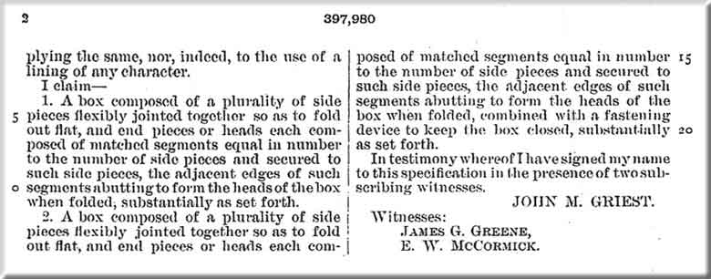
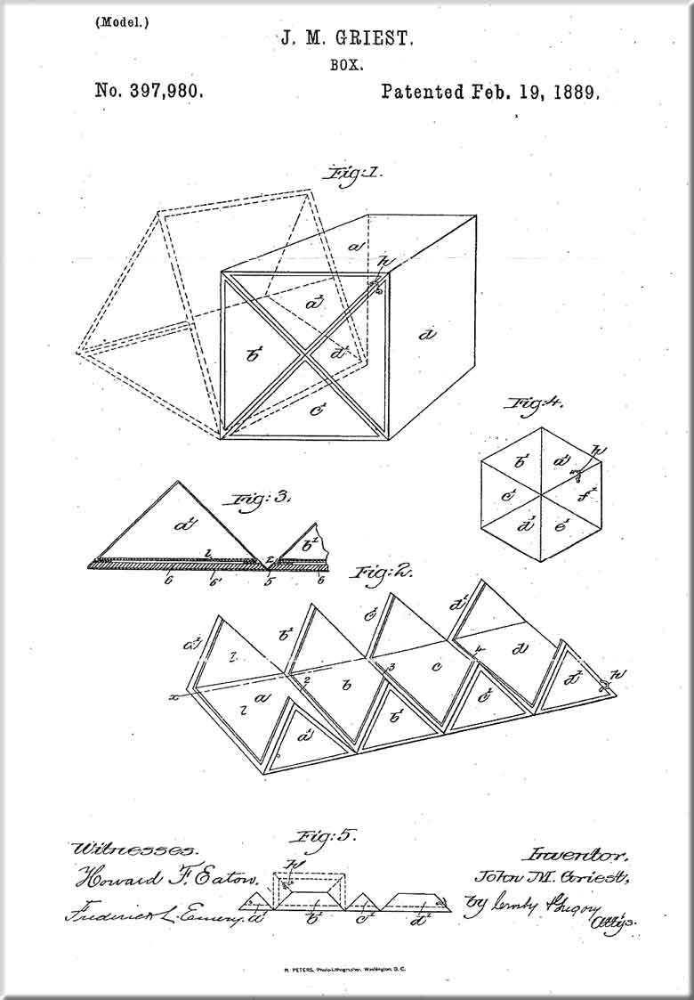

Below are the US Patent Documents (#397,980) and Drawings for Singer's wooden folding attachments box, known among collectors as the 'Puzzle Box', apparently patented by John Griest and assigned to the Singer company in 1889.


Pictures posted on this page may not be reproduced or distributed in part or in whole without the prior written permission of the relevant copyright owner